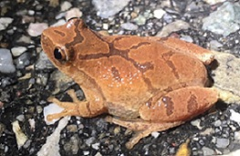
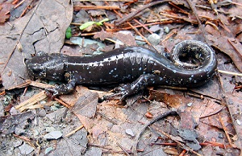
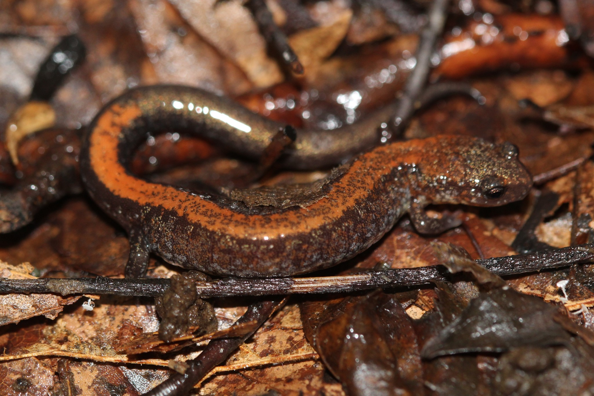

Amphibians
Spring Peeper (Pseudacris crucifer)
The Spring Peeper, or Pseudacris crucifer, is one of Vermont's smallest frogs. Its call closely resembles a short ascending whistle, or a series of ascending peeps.
Adults are usually 1" to 1.5" inches long, but adult females tend to be larger than adult males. Spring Peepers vary in color from light to dark brown, and they have dark markings on their back that usually form an "X." Adults can be found in nutrient-rich vegetation within the woods, near a swamp, or in the marshes. In the winter, they hibernate under logs or behind loose bark on trees.
Blue-Spotted Salamander (Ambystoma laterale)
The Blue-Spotted Salamander, or Ambystoma laterale, is the smallest of Vermont's three mole salamanders.
Blue-Spotted Salamanders typically grow to about 5" inches long, and they are black with small light blue spots on their backs and sides. These Salamanders thrive in lower elevation wetlands on the cool forest floor to keep their skin moist. Typically, Salamanders hide in damp, cool places during the day and only venture out at night. They live in crevices, under leaves, rotting wood, rocks, or in the burrows. They primarily live underground, except during mating season.
Eastern Red-Backed Salamander (Plethodon cinereus)
The Eastern Red-Backed Salamander, or Plethodon cinereus, usually grow to around 3.5" to 5" inches in length.
Eastern Red-Backed Salamanders typically have a reddish-brown back, with darker sides, while their belly is a salt-and-pepper mix, of white and grey - similar to granite. These Salamanders can be found statewide, and in fact is the most abundant Salamander in Vermont. The Eastern Red-Backed Salamander can generally be found in damp locations, under leaves or rich woody debris. However during Winter, these Salamanders retreat underground.
Eastern Newt (Notophthalmus viridescens)

The Eastern Newt, or Notophthalmus viridescens, typically reach 5" inches in length. Juveniles and adults both have a dark horizontal line going through their eyes, and rows of red spots outlined in black along their backs.
Eastern Newts, as a juvenile, appear a reddish-orange color, with slightly bumpy skin. As an adult, its color turns olive-green, and their bellies reveal scattered black spots on a bright yellow background. As juveniles, they live on land for up to eight years. As an adult, they return to the permanent water of ponds, small lakes, or marshes.